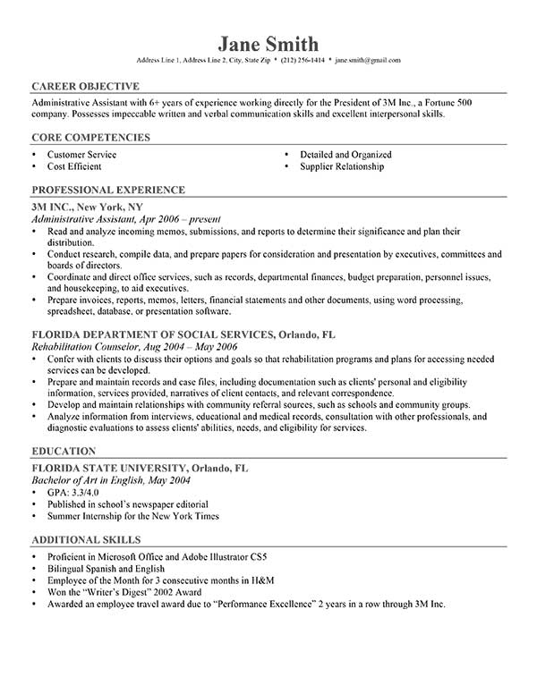

The Resume
Q. What is a resume?
A. A resume is a tool to summarize your qualifications on why an employer should hire you.
Q. What do I put on it?
A. Besides your qualifications, you should be specific on your relevenace to the position you are trying to be hired for. Other information includes
- Carrer Objective
- Tells the reader where you would like to go with your carrer over time.
- Professional Experince
- If you've had any work experince with the job you are trying to go for, this is where you would put it. The more you put, that's on subject, the better.
- Education
- Where did you go to school? Do you have a high school or college education? What was your GPA?
- Additional Skills
- Anything you think would be relevant for the reader to know about you.
- Tells the reader where you would like to go with your carrer over time.
- If you've had any work experince with the job you are trying to go for, this is where you would put it. The more you put, that's on subject, the better.
- Where did you go to school? Do you have a high school or college education? What was your GPA?
- Anything you think would be relevant for the reader to know about you.
Q. What size font should I use?
A. Nothing to large, but no smaller than an 11 point font as it will start to strain the eyes.
Q. What font should I use?
A. The most common is Times New Roman, but you can use any type of 'Sans' or 'Arial' font. In otherwords it should be clean and easy to read, don't do anything special here.
